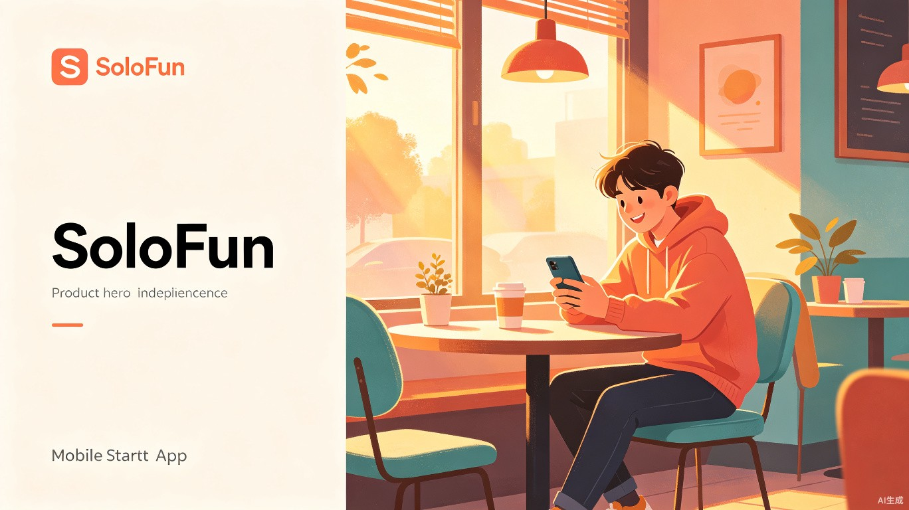
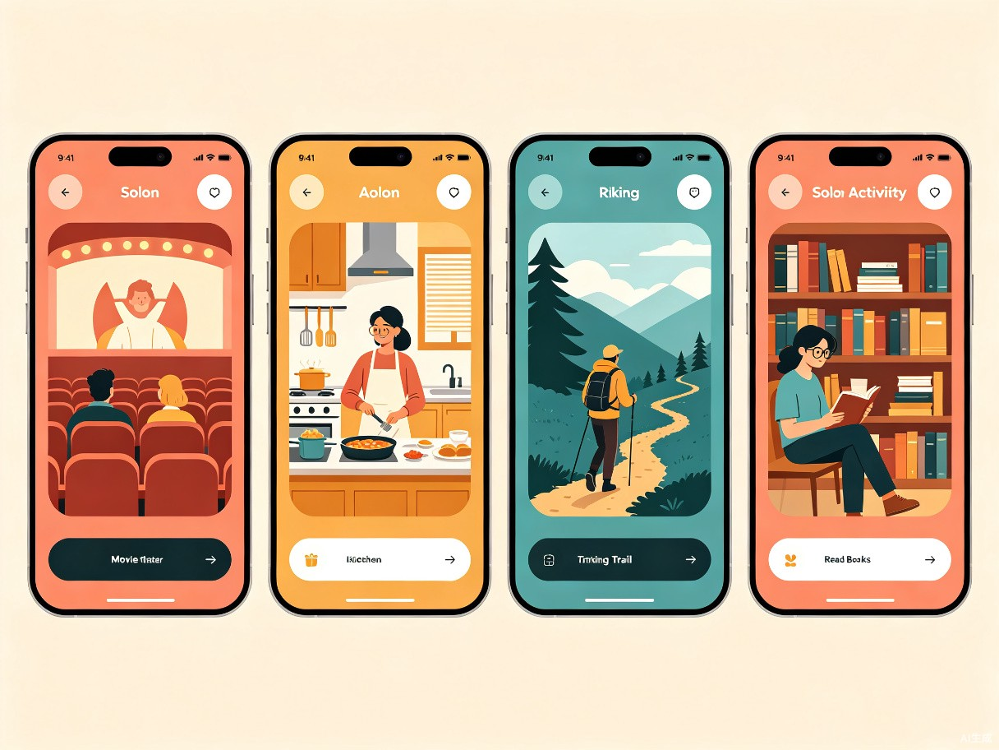
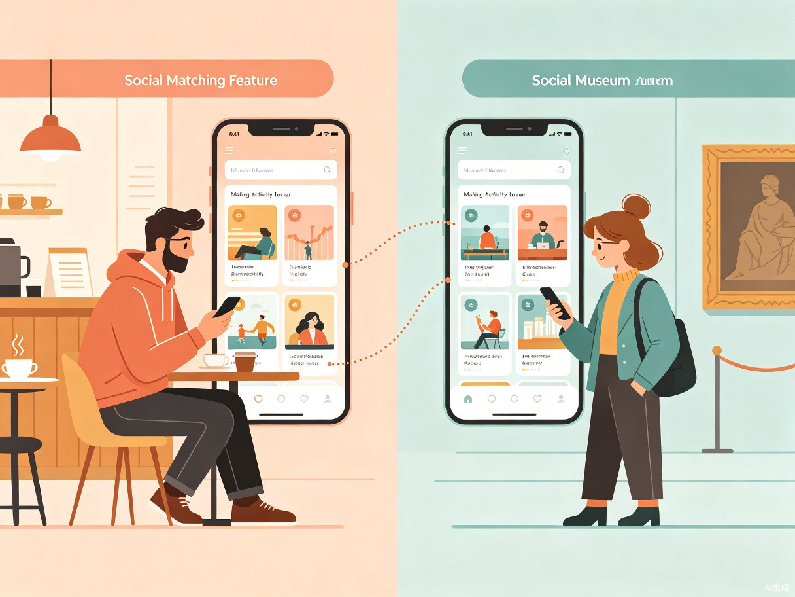

一个人也要好好玩 — AI 驱动的独处活动发现与体验平台
超过 80% 的年轻人每月至少进行一次"情绪消费"
但当你只想一个人出门时，却发现无处可去
Part 01
为什么会想到做这个？ 我身边越来越多的朋友表示"周末想出去走走，但约不到人就算了"。社交媒体上的"独处治愈"内容爆火，却缺少一个能将这种需求转化为行动的产品。年轻人不是不想出门，而是缺少一个人也能从容享受的引导和工具。
产品形态：独趣 SoloFun 是一款 微信小程序，集活动发现、智能推荐、独处社交于一体，帮助用户轻松找到适合一个人参与的生活娱乐活动。

Part 02
核心用户为 18-35 岁城市独居青年、单身白领、自由职业者，以及偶尔想要独处时光的伴侣/家庭人群。这一群体约 3.8 亿人，占比接近中国总人口的 27%，是"为体验和情绪价值买单"的主力消费人群。
活动信息散落在大众点评、小红书、公众号等平台，一个人想找"适合独自参加"的活动需要反复搜索、筛选，效率极低。
电影院、餐厅等场所以多人场景设计，一个人去常感到"格格不入"，缺少对单人友好场所的标注和推荐。
打开多个 App 对比评价、距离、价格、时间，最终因为"太麻烦了"放弃出门，继续宅在家里。
偶尔也想认识志同道合的人，但不喜欢"尬聊式"的社交 App，缺少基于共同活动的自然社交场景。
Part 03
根据用户的位置、时间、预算、心情标签，智能推荐最适合的独处活动。支持"随机探索"模式，解决选择困难症。
基于 LBS 展示附近"单人友好"场所，标注单人座、吧台位、独立包间等设施信息，让一个人出门不再尴尬。
记录每次独处体验的文字、照片、心情评分，自动生成"我的独处地图"和月度回顾，看见自己的成长轨迹。
活动结束后可选择"公开体验卡"，让同样想去的人看到真实反馈。支持"拼桌"功能 — 同一时间段、同一地点的用户可选择性连接。
前端使用微信小程序原生开发，后端采用云开发 + AI 推荐服务，结合地图 SDK 实现位置智能匹配

Part 04
独居经济市场规模已超万亿元。独趣作为连接"一个人想出门"与"商家想获客"的桥梁，可通过活动推荐佣金、商家广告、会员增值服务实现盈利。核心优势在于精准触达"高意愿、低门槛"的即时消费场景。
一个人吃饭、看电影、旅行不应被视为"孤独"，而是一种主动选择的生活方式。独趣通过打造"一个人也能玩得开心"的产品体验，帮助用户重新定义独处 — 不是没人陪，而是享受与自己相处的时光。
Part 05
| 维度 | 大众点评 | 小红书 | 独趣 SoloFun |
|---|---|---|---|
| 核心定位 | 商家点评 | 内容种草 | 独处活动发现 |
| 单人场景适配 | 无 | UGC 零散 | 核心功能 |
| AI 个性化推荐 | 基础 | 算法分发 | 情境感知推荐 |
| 轻量社交 | 无 | 评论区 | 活动拼桌 |
| 独处体验记录 | 无 | 笔记 | 日记 + 地图 |
Part 06
时间：第 1-2 个月
核心城市单人友好地图 + AI 活动推荐 + 基础日记功能，覆盖餐饮、观影、展览三大品类
时间：第 3-6 个月
新增"活动拼桌"轻量社交、商家入驻体系、独处排行榜，拓展至 20+ 城市和 10+ 活动品类
时间：第 7-12 个月
开放 API 对接第三方服务平台，推出"独处体验认证"商家体系，构建一人经济生态
独趣 SoloFun — 让每一次独处都成为值得期待的体验
了解完整方案